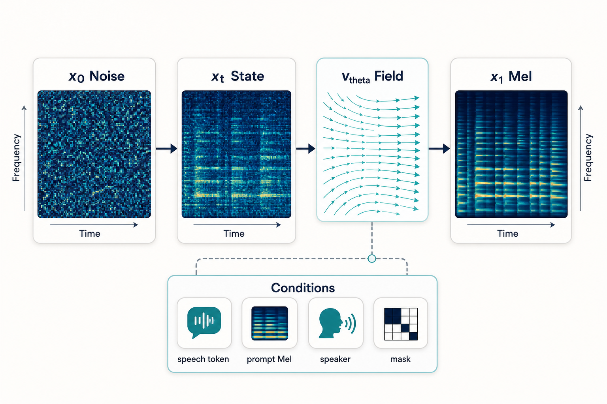
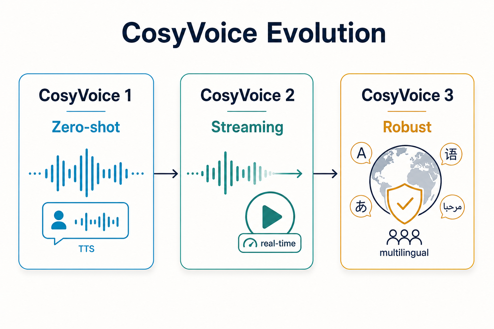

01 / Tokenizer
把声音压成 token
CosyVoice 1 使用 ASR encoder + VQ 得到监督语义 token；CosyVoice 2 转向 FSQ；CosyVoice 3 引入 MinMo 多任务 tokenizer。
这不是论文摘抄页，而是一套从直觉、组件、版本演进到复习卡片的学习站。目标是让你能解释：文本如何变成 speech token，token 如何驱动 Flow Matching，最后如何经 Vocoder 变成声音。
CosyVoice 系列可以按一个主问题理解：如何让 TTS 同时具备内容一致性、音色克隆能力、低延迟、多语种泛化和真实场景鲁棒性。
如果只记一句：LLM 负责“生成离散语音语义序列”，Flow Matching 负责“把离散语义变成连续声学表示”，Vocoder 负责“把声学表示还原成波形”。
CosyVoice 1 使用 ASR encoder + VQ 得到监督语义 token；CosyVoice 2 转向 FSQ；CosyVoice 3 引入 MinMo 多任务 tokenizer。
输入文本、prompt token 和条件信息，输出 speech token。它解决“说什么”和“像谁说”的离散序列问题。
学习一个速度场，把噪声逐步推向目标 Mel。CosyVoice 2 的关键是 chunk-aware CFM，用于流式合成。
最后把连续声学特征变成可播放音频。它不负责理解文本，但决定声音细节和听感上限。
Flow Matching 的核心不是“去噪很多步”这个表象，而是学习一个条件速度场：在文本、speaker prompt、speech token 的约束下，每一步应该往哪里移动。

你可以播放粒子如何从随机噪声移动到 Mel 结构，也可以拖动时间轴观察中间态。页面里把 x0、velocity field、x1 和 CosyVoice 的 Token-to-Mel 关系放在同一个视图里。
版本演进不是简单堆模型，而是从“可做”到“可实时交互”，再到“真实复杂输入可用”。

不要按术语表背。先补齐能挡住论文理解的概念，再进入细节：tokenizer、量化、语言模型、Flow Matching、流式推理、后训练。
理解 CosyVoice 为什么从 VQ 走向 FSQ，再到多任务 tokenizer。
理解 LLM 在 TTS 中负责离散语义 token，而不是直接生成波形。
理解从 token 到 Mel 的连续轨迹，以及为什么可加条件、可流式。
理解首包延迟、未来信息限制和 chunk-aware decoder 的工程约束。
理解如何把不可微的奖励目标变成可优化路径，以及 reward balance 的风险。
理解真实文本不是干净 benchmark，数字、缩写、多音字和纠音都会影响 TTS。